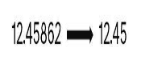
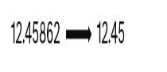
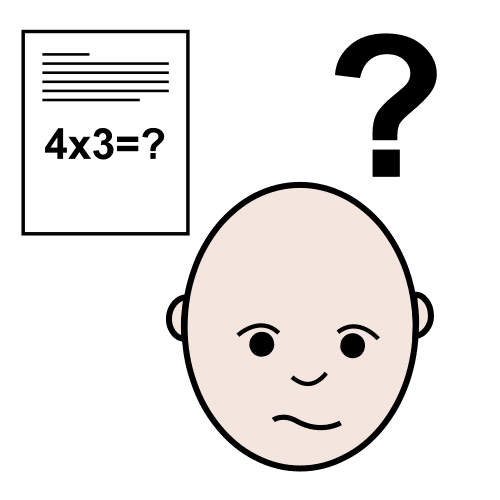
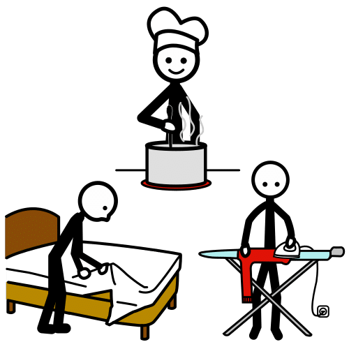
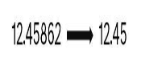
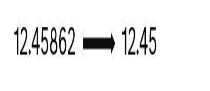
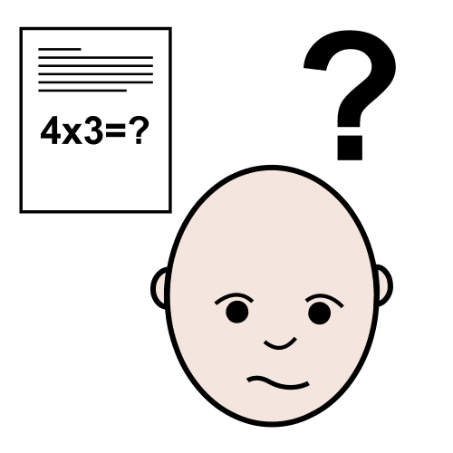
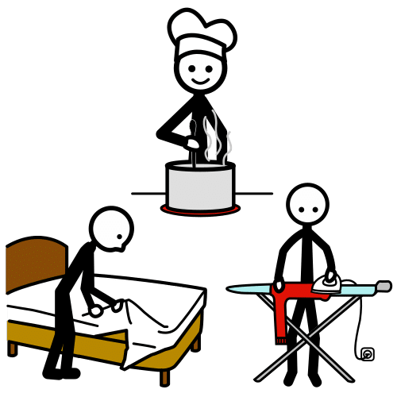
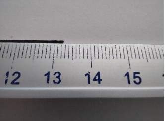

Diccionario
Aproximación por Truncamiento

Preciso
Redondeo

Valores apróximados

Valores reales
Vida cotidiana





Ya somos unos expertos de los números decimales, sabemos escribirlos de varias formas y cómo relacionarlos.
Pero... las cantidades que utilizamos, en nuestra vida cotidiana, casi nunca son los valores reales sino valores aproximados.
Hemos visto como muchos números decimales tienen infinitas cifras, y todas no se pueden utilizar, no tendría sentido.
Piensa, ¿dos personas que miden 1.73 metros son exactamente igual de altas?
Vas a continuar el trabajo aprendiendo a aproximar,
de forma adecuada los números decimales.
Este aprendizaje es fundamental para realizar tu trabajo,
pues vas a manejar cantidades de dinero que tienen 2 cifras decimales
y vas a estudiar qué sucedería si solo tuviesen una cifra decimal.
Necesitas un cable que tenga una longitud de 1/3 de metro.
¿Cuánto cable compras?
Sabes que 1/3=0.33333...., por tanto, puede que te valga comprar 0,33 m de cable que son 33 cm.
O puede que necesites ser más preciso y tengas que comprar 0,333 m, que son 333 mm.
O puede que tengas que ser más preciso y necesites usar más decimales, pero nunca vas a poder usar las infinitas cifras decimales que tiene 0.3333......
En todos los casos estás usando un número cercano a la longitud del cable en lugar de usar la longitud exacta del cable.
Según la Real Academia Española, aproximar significa, en su segunda acepción, obtener un resultado tan cercano al exacto como sea necesario para un propósito determinado.
En matemáticas aproximar un número es cambiarlo por otro número cercano a él.
Cuando aproximamos un número utilizamos el signo ≈
Por ejemplo: 1/3 ≈ 0.33 o 1/3 ≈ 0.333
Para aproximar un número lo primero que hay que saber es cuántas cifras vamos a mantener en el número aproximado.
Una vez tenemos las cifras,
debemos decidir si queremos que la aproximación sea un número mayor o menor que el real.
Si queremos que la aproximación sea un número menor se llama aproximación por defecto,
y para realizarla basta con eliminar las cifras que no queremos.
Por ejemplo, 1/7 = 0.142857142857142857......
si se aproxima por defecto a las milésimas 1/7 ≈ 0.142
Si queremos que la aproximación sea un número mayor se llama aproximación por exceso,
y para realizarla hay que eliminar las cifras que no queremos y sumarle 1 a la cifra de la derecha.
Por ejemplo, 1/7 = 0.142857142857142857........
si se aproxima por exceso a las milésimas 1/7 ≈ 0.143
√2 = 1.4142135623730950488016887242...
| Aproximaciones | Por defecto | Por exceso |
| A las décimas | 1.4 | 1.5 |
| A las centésimas | 1.41 | 1.42 |
| A las milésimas | 1.414 | 1.415 |
| A las diezmilésimas | 1.4142 | 1.4143 |
| A las cienmilésimas | 1.41421 | 1.41422 |
El truncamiento y el redondeo son dos formas de aproximar un número.
El truncamiento consiste en aproximar por defecto, es decir, aproximar quitando las cifras decimales que no queremos usar.
2/3=0.666.... truncado a las centésimas es 0.66.
El redondeo consiste en elegir entre la aproximación por defecto y por exceso la que queda más cerca del número que vamos a aproximar.
Por ejemplo, 2/3=0.666....
aproximado a las centésimas por defecto es 0.66
y por exceso 0.67.
La distancia de 0.66 a 0.666.... es mayor de 6 milésimas, sin embargo, la distancia de 0.67 a 0.666.... es menor de 4 milésimas, por tanto, la aproximación por exceso está más cerca de 2/3.
2/3 redondeado a las centésimas es 0.67.
Para calcular la aproximación por redondeo de un número se usa la siguiente regla: si la primera cifra que vas a eliminar es menor que 5 se aproxima por defecto, si las primera cifra que vas a eliminar es mayor o igual que 5 se aproxima por exceso.
Por ejemplo:
4/11 = 0.363636...... redondeado a las centésimas es 0.36 y redondeado a las milésimas es 0.364
π =3.141592653589793238462643383...
| Aproximaciones | Truncamiento | Redondeo |
| A las décimas | 3.1 | 3.1 |
| A las centésimas | 3.14 | 3.14 |
| A las milésimas | 3.141 | 3.142 |
| A las diezmilésimas | 3.1415 | 3.1416 |
| A las cienmilésimas | 3.14159 | 3.14159 |
Esto de truncar y redondear no parece difícil, pero seguro que tiene secretos ocultos que conviene desvelar.
Lee y completa
Reconoce si las aproximaciones son por exceso o por defecto arrastrando al lugar correspondiente.
Practica la aproximación de números decimales. Supera diez niveles.
Has visto que redondear es elegir de entre la aproximación por defecto y por exceso la que más cerca está del número que vas a aproximar.
La regla dice que que si la primera cifra que vas a eliminar es menor que 5 se elige la aproximación por defecto, y si la primera cifra que vas a eliminar es mayor o igual que 5 se elige la aproximación por exceso.
La aproximación a las décimas de 1.25 es 1.3. Sin embargo, 1.2 y 1.3 están a la misma distancia de 1.25.
¿Por qué crees que en este caso se elige la aproximación por exceso? ¿Se podría haber puesto una regla que en estos casos eligiera la aproximación por defecto?
Elabora un texto en el que respondas de forma razonada las preguntas anteriores e indica también algunas ventajas e inconvenientes de la regla para aproximar en estos casos.
Obra publicada con Licencia Creative Commons Reconocimiento Compartir igual 4.0